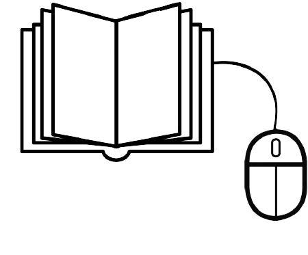

|  |
THESARI I MENDJES |
Dikur, një lepur tallej me këmbët e shkurtra dhe ngadalësinë e ecjes së një breshke, megjithatë, ai nuk qëndroi i heshtur dhe u mbrojt duke qeshur dhe duke i thënë lepurit:
- Ju mund të jeni një mik shumë i shpejtë lepur por, jam më se i sigurt se mund t'ju fitoj një garë.
Lepuri, i befasuar nga ato që i tha breshka, e pranoi sfidën pa u menduar dy herë, pasi ishte shumë e sigurt që do ta fitonte breshkën me sy të mbyllur.
Pastaj, të dy i propozuan dhelprës që ajo të ishte ajo që do të tregonte rrugën dhe qëllimin.
Ditë më vonë, mbërriti momenti i pritur i garës dhe kur tingëllonte numërimi i tre, filloi gara e këtyre dy pretendentëve.
Breshka nuk ndalet së ecuri dhe ecur, por me ritmin e saj të ngadaltë, ajo përparoi e qetë drejt qëllimit.
Në vend të kësaj, lepuri vrapoi aq shpejt sa e la breshkën shumë prapa.
Kur ai u kthye dhe nuk e pa më, lepuri pa suksesin e tij në garë me siguri dhe vendosi të bënte një sy gjumë.
Pas pak, lepuri u zgjua dhe pa nëse breshka ende nuk arrinte shpinën,
por kur shikoi drejt qëllimit, ai e pa breshkën shumë afër fundit dhe në një përpjekje të dëshpëruar për të vrapuar sa më shpejt, breshka mbërriti dhe fitoi.
Njëherë e një kohë ishte një luan i cili po pushonte në xhungël, pas një dite gjuetie. Ishte një ditë e nxehtë dhe ai thjesht donte të flinte.
Kur ai ishte më komod, erdhi një mi duke bërë shumë zhurmë. Luani ishte aq i madh sa që ai as nuk e vuri re, por miu filloi të ngjitej në hundë.
Luani u zgjua me një humor shumë të keq, filloi të gjëmojë dhe e kapi miun, duke u përgatitur ta hante.
"Më falni!" miu i gjorë u lut. "Ju lutem më lini të shkoj dhe një ditë me siguri do t'ju kthej".
Luani ishte i kënaqur kur mendoi se një mi mund ta ndihmonte ndonjëherë. Por ai ishte bujar dhe më në fund e liroi.
Disa ditë më vonë, ndërsa ndiqte një pre në pyll, luani u kap në rrjetën e një gjahtari.
Ai nuk ishte në gjendje të lirohej dhe ulëriti me zë të lartë për ndihmë. Miu njohu zërin dhe erdhi shpejt për ta ndihmuar.
Ai kafshoi një nga litarët që lidhnin luanin dhe luani u çlirua.
Pastaj miu tha:
"Edhe një mi mund të ndihmojë një luan".
Një karkalec këndonte dhe kënaqej gjatë verës. Ditë pas dite ai zgjohej vonë dhe iu përkushtua vetëm këngës, derisa një ditë diçka i tërhoqi vëmendjen.
Një grup milingonash po kalonin nën degën e tij duke mbajtur pjesë të mëdha ushqimi në shpinë, atëherë cicada zbriti nga dega e tij dhe pyeti njërën.
-Miq milingonë, pse punon kaq shumë?
-Dima po afrohet, ne duhet të mbajmë dispozita që të jemi në gjendje të kalojmë acarin- u përgjigj milingona.
Të cilave më pas cicada i tha:
-Bah! Të punosh kaq shumë është për budallenjtë, bëj si unë, këndo dhe shijo verën.
Milingona e vogël pa thënë asgjë tjetër vazhdoi rrugën. Në ditët në vijim, cicada vazhdoi të këndonte dhe shpesh kompozonte këngë që e tallnin mikun e tij të vogël milingonën.
Por një ditë, cicada u zgjua dhe nuk ishte më verë, dimri kishte ardhur.
Acari ishte më i keq nga të gjitha vitet e fundit, ai u përpoq të mbështjellë veten me gjethe nga dega e tij, por nuk mundi.
E uritur ajo kërkoi ushqim, por nuk gjeti asgjë.
Pastaj iu kujtua që shoku i tij i vogël i milingonave kishte ruajtur furnizimet gjatë verës dhe ai shkoi te milingona e tij, trokiti në derë dhe milingona doli.
Pastaj ai tha:
-Antë, më ndihmo; Jam i uritur dhe jam i ftohtë, më jep strehë dhe ushqim!
-Por çfarë po bëje gjithë cikada e verës? - - pyeti milingona.
-Këndo dhe vallëzo- u përgjigj cikada.
-Epo, nëse e keni bërë atë në verë, tani vallëzoni në dimër! -Tha milingona dhe mbylli derën.
Ndërkohë, cikada e penduar u largua duke reflektuar në mësimin që kishte marrë.
Njëherë e një kohë ishte një djalë me emrin Pjetër i cili ishte një bari dhe ai ecte me delet e tij tërë ditën.
Një ditë ai u mërzit aq shumë, saqë filloi të pyeste veten se si të argëtohej. Pastaj i shkoi në mendje të luante një shaka, duke thënë se një ujk ishte afër. Tha:
-Ujku po vjen, ujku po vjen! Ndihmoni!
Fshatarët erdhën shpejt me shkopinj për ta ndjekur ujkun, por kur arritën në pemën ku ishte ulur Pjetër, e gjetën atë duke qeshur me të madhe. Pjetri tha:
Hahaha! Ju e keni besuar atë!
Fqinjët shkuan në shtëpi duke menduar se ishte një shaka dhe se asgjë nuk ishte në rregull.
Një ditë tjetër, Pjetri u mërzit përsëri dhe u kthye me të njëjtën shaka:
-Ujku po vjen, ujku po vjen! Ndihmoni! Ndihmoni!
Fqinjët u kthyen shpejt, me shkopinjtë e tyre dhe të përgatitur për t'u përballur me ujkun. Por ata e gjetën Pjetrin duke qeshur përsëri, i cili qeshi dhe tha:
Ju e keni besuar përsëri! Çfarë e pabesueshme! Hahaha!
Këtë herë fqinjët menduan se shaka nuk ishte aq qesharake dhe ata shkuan në shtëpi me një humor të keq.
Një ditë tjetër, Pjetri po ecte me delet e tij kur dëgjoi një zhurmë në kaçube. Ai nuk u interesua, por shpejt doli një ujk dhe filloi t'i ndiqte delet e tij. Pedro filloi të kërkonte ndihmë:
-Ujku po vjen, ujku po vjen! Ndihmoni!
Fqinjët e dëgjuan por nuk i kushtuan vëmendje, pasi menduan se ishte një shaka tjetër nga Pjetri.
Ujku ishte në gjendje të kapte disa nga delet e tij dhe i mori për t'i ngrënë me tufën e tij.
Dikur ishte një sorrë që prehej në një pemë, pasi kishte arritur të vidhte një djathë nga dritarja e një shtëpie.
Aty pranë po ecte një dhelpër që ndjeu aromën e fortë, pa sorrën dhe tha:
Çfarë dite e mirë është, gjithashtu penda juaj është shumë e bukur. I shkon për shtat shumë.
Sorra u ndje shumë mirë për ato që i tha dhelpra. Ai donte të këndonte për të festuar, hapi sqepin e tij, por pastaj lëshoi djathin.
Dhelpra, duke buzëqeshur, vrapoi te djathi dhe e kapi me gojën e tij para se të binte për tokë.
Një burrë po shijon një gjumë të mirë kur papritmas filloi të ndjejë kruarje në të gjithë trupin.
I bezdisur nga situata, ai kërkoi në të gjithë shtratin e tij për të parë se çfarë po i shkaktonte kaq shumë telashe. Pas kërkimit të tij, ai gjeti një plesht të vogël dhe tha fjalët e mëposhtme:
- Kush mendon se je një krijesë e parëndësishme, që po më kafshon në të gjithë trupin dhe nuk më lë të shijoj pushimin tim të merituar?
- Pleshti u përgjigj: Më fal zotëri, nuk ishte qëllimi im të të shqetësoj në asnjë mënyrë;
Unë ju lutem ju lutem më lini të vazhdoj të jetoj, sepse për shkak të madhësisë time të vogël, nuk mendoj se mund t'ju shqetësoj shumë.
Njeriu duke qeshur me dukuritë e pleshtit, tha:
- Më fal plesht i vogël, por nuk mund të bëj asgjë tjetër përveçse t'i jap fund jetës tënde përgjithmonë, pasi nuk kam asnjë arsye të vazhdoj të duroj kafshimet e tua, pa marrë parasysh sa i madh apo i vogël mund të jetë paragjykimi që më shkakton.
Dikur në një shkollë ishte një lepur shumë mendjemadh, i cili çdo ditë vishte këpucët e tij shumë të pastra, me shkëlqim, me shkëlqim.
Në të njëjtën klasë ishte edhe derri i vogël Peni, i cili ishte shumë ziliqar i lepurit për këpucët e tij.
Por derri i vogël, që jetonte në një pishinë baltë, e dinte se ai kurrë nuk do të merrte këpucë si ato të mikut të tij të lepurit.
Çdo ditë pastroja dhe pastroja, por asgjë nuk ishte ende aq e ndyrë.
Një ditë duke luajtur në pushim më duhej të bëja një garë për të parë kush ishte më i shpejti. Derri i frikësuar nuk dinte çfarë të bënte, pasi që pantoflat e tij nuk ishin si ato të mikut të tij.
Në ditën e garës, derri Peni nuk mendoi dy herë dhe vrapoi së bashku me lepurin.
Ndërsa vraponte, ai vetëm mendoi të ishte fitues dhe të mos dorëzohej kurrë, ashtu si i tha nëna e tij.
Me të arritur në vijën e finishit, të gjithë u mahnitën nga shpejtësia e derrit Peni, ata nuk e kuptuan se si ai mund të kishte rrahur lepurin dhe pantoflat e tij super.
Dikur ishte një marinar që ndërmori një udhëtim shumë të gjatë. Për ta bërë udhëtimin më argëtues, ai mori me vete një majmun për argëtim gjatë udhëtimit të gjatë.
Kur ishin pranë bregdetit të Greqisë, një furtunë shumë e fortë dhe e dhunshme u ngrit dhe shkatërroi anijen e dobët. Ekuipazhi i tij, marinari dhe majmuni duhej të notonin në mënyrë që të shpëtonin jetën e tyre.
Ndërkohë, majmuni që luftonte kundër valëve u pa nga një delfin; i cili, duke besuar se ishte njeri, shkoi ta shpëtojë duke u rrëshqitur nën të dhe duke e transportuar në bregdet.
Kur po mbërrinin në port, delfini pyeti majmunin:
- Majmun, a jeni nga Athina ?, Dhe majmuni për të qenë shumë mendjemadh dhe gënjeshtar, u përgjigj:
- Po, dhe unë gjithashtu kam shumë të afërm të rëndësishëm që jetojnë atje -
Delfini e pyeti përsëri nëse e njihte Pireun (portin e famshëm të Athinës).
Majmuni, duke besuar atëherë se ishte një burrë, u përgjigj se ai jo vetëm që e njihte, por se ai ishte gjithashtu një nga miqtë e tij më të mirë.
Delfini, i zemëruar nga kaq shumë gënjeshtra që majmuni tha, u kthye dhe e ktheu në det të hapur.
Ata ecnin shumë ngadalë dhe të rraskapitur nga dielli një gomar, me ngarkesën e tij të bukës dhe zotërinë e tij të ndjekur nga qeni i tij.
Kështu, ata erdhën në një livadh të gjelbër ku mjeshtri, i lodhur dhe i rraskapitur nga shëtitja, shkoi të flinte nën hijen e një peme.
Gomari shkoi të hante një bar që ishte në livadh kur papritmas qeni, i cili gjithashtu ishte shumë i lodhur dhe i uritur, i tha:
- I dashur gomar, edhe unë jam i uritur, a mund të më jepni pak bukë që është në shportën që mbani me vete ju lutem?
Gomari iu përgjigj:
- Më mirë, pse nuk prisni edhe pak derisa Master të zgjohet dhe t'ju japë të njëjtin ushqim?
Qeni, duke dëgjuar përgjigjen e gomarit, shkoi në anën tjetër të livadhit. Thenshtë atëherë se, ndërsa gomari ende po hante barin e tij, u shfaq një ujk i uritur dhe menjëherë iu hodh gomarit për ta gllabëruar. I befasuar, ai i thirri ndihmë qenit:
- Ndihmë! Më ruaj qen mik!
Qeni u përgjigj:
"Më mirë, pse nuk pret pak më shumë derisa mjeshtri të zgjohet dhe të të shpëtojë?"
Dikur ishte një tregtar i pasur me pëlhura që jetonte në një fshat me gruan dhe dy fëmijët e tij. Ata kishin një pulë të bukur që vinte një vezë çdo ditë.
Nuk ishte një vezë normale, por një vezë e artë. Sidoqoftë, tregtari i ri nuk ishte i kënaqur me atë që merrte çdo ditë.
Ai donte të merrte të gjitha vezët e arta nga pula e tij në asnjë kohë. Kështu që një ditë
ai mendoi dhe më në fund arriti në një plan. Ai vendosi të vrasë pulën dhe të mbledhë të gjitha vezët.
Të nesërmen, kur pula vendosi një vezë të artë, burri e kapi atë, mori një thikë të mprehtë, i preu qafën dhe ia hapi trupin.
Nuk kishte asgjë përveç gjakut kudo dhe aspak gjurmë nga vezët. Isha shumë e trishtuar sepse tani nuk do të merrja as edhe një vezë.
Për shkak të lakmisë së tij, ai u bë më i varfër dhe më në fund u bë një lypës.